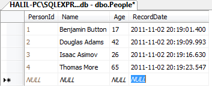
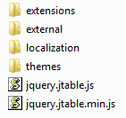
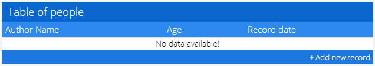
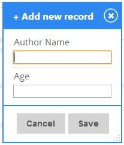
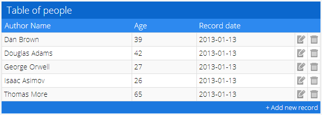
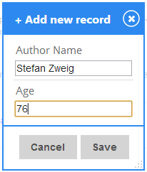
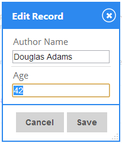
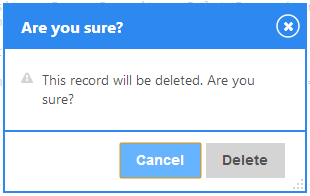

Getting Started
- Introduction
- Dependencies
- Downloading jTable
- Creating header
- Creating a container
- Creating a jTable instance
- Creating the list action
- Creating a new record
- Editing/Updating a record
- Deleting a record
- The result
Introduction
Here, I will examine a simple table implementation with jTable. Assume that you have a database table as shown below (For more complex tables, see samples in the demo list).

Surely, you don't have to work with SQL Server, or even with a DBMS. jTable does not care about any server-side technology.
Dependencies
jTable is depended on jQuery and jQueryUI. So, If you haven't yet, you must first download latest versions of these libraries from jquery.com.
Downloading jTable
You can download jTable from Downloads section. Also, you can get it from nuget if you are using Visual Studio.
After downloading, you will have a folder structure like that:
Creating Header
Add these lines to the HEAD section of your HTML document:
<!-- Include one of jTable styles. --> <link href="/jtable/themes/metro/blue/jtable.min.css" rel="stylesheet" type="text/css" /> <!-- Include jTable script file. --> <script src="/jtable/jquery.jtable.min.js" type="text/javascript"></script>
You can select any theme and color schema in themes folder.
NOTE: You must also add needed jQuery and jQueryUI JavaScript and CSS files before importing jTable files.
Creating a container
jTable needs only a container element for your table.
<div id="PersonTableContainer"></div>
Container element can be a simple div element as shown above.
Creating a jTable instance
Add these JavaScript codes to your page:
<script type="text/javascript">
$(document).ready(function () {
$('#PersonTableContainer').jtable({
title: 'Table of people',
actions: {
listAction: '/GettingStarted/PersonList',
createAction: '/GettingStarted/CreatePerson',
updateAction: '/GettingStarted/UpdatePerson',
deleteAction: '/GettingStarted/DeletePerson'
},
fields: {
PersonId: {
key: true,
list: false
},
Name: {
title: 'Author Name',
width: '40%'
},
Age: {
title: 'Age',
width: '20%'
},
RecordDate: {
title: 'Record date',
width: '30%',
type: 'date',
create: false,
edit: false
}
}
});
});
</script>
All HTML and JavaScript codes ready! We set title of the table, action URLs to perform AJAX operations on server and structure of our Person record fields. If you run the page now, you will see the table without data:

If you click '+ Add new record' lick, a dialog is automatically created:

We must create server side codes to be able to run the page.
Creating the list action
listAction option of jTable is used to get data to create table of records. It's a regular URL as '/GettingStarted/PersonList'. If you are working with PHP, It maybe '/GettingStarted/PersonList.php' ...etc. jTable performs an ajax POST request to this URL to get records when you call the load method.
$('#PersonTableContainer').jtable('load');
load method can be called after table initialized.
All server actions those are used by jTable must return a JSON object. This is a sample return value for this example:
{
"Result":"OK",
"Records":[
{"PersonId":1,"Name":"Benjamin Button","Age":17,"RecordDate":"\/Date(1320259705710)\/"},
{"PersonId":2,"Name":"Douglas Adams","Age":42,"RecordDate":"\/Date(1320259705710)\/"},
{"PersonId":3,"Name":"Isaac Asimov","Age":26,"RecordDate":"\/Date(1320259705710)\/"},
{"PersonId":4,"Name":"Thomas More","Age":65,"RecordDate":"\/Date(1320259705710)\/"}
]
}
Don't worry about creating a JSON object. All common server side technologies have ability to create these objects easily (see samples below).
Result property can be "OK" or "ERROR". If it is "OK", Records property must be an array of records. If it is "ERROR", a Message property can explain reason of the error to show to the user. You can take a look at the API reference document to see supported date formats.
Here, there are sample server-side codes for listAction in some common server-side technologies:
[HttpPost]
public JsonResult PersonList()
{
try
{
List<Person> persons = _repository.PersonRepository.GetAllPeople();
return Json(new { Result = "OK", Records = persons });
}
catch (Exception ex)
{
return Json(new { Result = "ERROR", Message = ex.Message });
}
}
Download all samples from download page.
[WebMethod(EnableSession = true)]
public static object PersonList()
{
try
{
List<Person> persons = _repository.PersonRepository.GetAllPeople();
return new { Result = "OK", Records = persons };
}
catch (Exception ex)
{
return new { Result = "ERROR", Message = ex.Message };
}
}
Download all samples from download page.
//Get records from database
$result = mysql_query("SELECT * FROM people;");
//Add all records to an array
$rows = array();
while($row = mysql_fetch_array($result))
{
$rows[] = $row;
}
//Return result to jTable
$jTableResult = array();
$jTableResult['Result'] = "OK";
$jTableResult['Records'] = $rows;
print json_encode($jTableResult);
Download all samples from download page.
So, now we can run the page and see the result:

Creating a new record
When we click the '+ Add new record' link below the table, a create record form is automatically generated by jTable:

When try to add a person, we get an error since we haven't implement createAction yet! createAction option of jTable is used to submit (POST) a 'create record form' to the server. When you press Save button, a POST data is sent to server as shown below:
Name=Dan+Brown&Age=55
In the server side, you can save new person to the database. createAction must return newly created record (as JSON object)! A sample return value for createAction can be:
{
"Result":"OK",
"Record":{"PersonId":5,"Name":"Dan Brown","Age":55,"RecordDate":"\/Date(1320262185197)\/"}
}
Same as all jTable actions, returning object must contain a Result property that's value can be "OK" or "ERROR". If it's "OK", Record property is the created record.
Here, there are sample server-side codes for createAction in some common server-side technologies:
[HttpPost]
public JsonResult CreatePerson(Person person)
{
try
{
Person addedPerson = _repository.PersonRepository.AddPerson(person);
return Json(new { Result = "OK", Record = addedPerson });
}
catch (Exception ex)
{
return Json(new { Result = "ERROR", Message = ex.Message });
}
}
Download all samples from download page.
[WebMethod(EnableSession = true)]
public static object CreatePerson(Person record)
{
try
{
Person addedPerson = _repository.PersonRepository.AddPerson(record);
return new { Result = "OK", Record = addedPerson };
}
catch (Exception ex)
{
return new { Result = "ERROR", Message = ex.Message };
}
}
Download all samples from download page.
//Insert record into database
$result = mysql_query("INSERT INTO people(Name, Age, RecordDate) VALUES('" . $_POST["Name"] . "', " . $_POST["Age"] . ",now());");
//Get last inserted record (to return to jTable)
$result = mysql_query("SELECT * FROM people WHERE PersonId = LAST_INSERT_ID();");
$row = mysql_fetch_array($result);
//Return result to jTable
$jTableResult = array();
$jTableResult['Result'] = "OK";
$jTableResult['Record'] = $row;
print json_encode($jTableResult);
Download all samples from download page.
When server successfully saves the new record, same record is automatically added to the jTable with an animation.
Editing/Updating a record
When we click edit icon for a record, a edit record form is automatically generated by jTable:

When we change age of Dougles Adams and save the form, a POST operation made to updateAction URL with fallowing values:
PersonId=2&Name=Douglas+Adams&Age=43
In the server side, you can update fields in the database table for PersonId=2. updateAction must return a JSON object like that:
{"Result":"OK"}
If Result is "ERROR", a Message property can explain the error reason. If Result is "OK", jTable updates cells on the table in the page with an animation.
Here, there are sample server-side codec for updateAction in some common server-side technologies:
[HttpPost]
public JsonResult UpdatePerson(Person person)
{
try
{
_repository.PersonRepository.UpdatePerson(person);
return Json(new { Result = "OK" });
}
catch (Exception ex)
{
return Json(new { Result = "ERROR", Message = ex.Message });
}
}
Download all samples from download page.
[WebMethod(EnableSession = true)]
public static object UpdatePerson(Person record)
{
try
{
_repository.PersonRepository.UpdatePerson(record);
return new { Result = "OK" };
}
catch (Exception ex)
{
return new { Result = "ERROR", Message = ex.Message };
}
}
Download all samples from download page.
//Update record in database
$result = mysql_query("UPDATE people SET Name = '" . $_POST["Name"] . "', Age = " . $_POST["Age"] . " WHERE PersonId = " . $_POST["PersonId"] . ";");
//Return result to jTable
$jTableResult = array();
$jTableResult['Result'] = "OK";
print json_encode($jTableResult);
Download all samples from download page.
Deleting a record
When we click delete icon for a record, a confirmation dialog is shown to the user by jTable (confirmation is optional but open as defalut) :

When we click the delete button, a POST operation made to deleteAction URL with fallowing values:
PersonId=3
You can delete the record 3 in the server. deleteAction also returns a JSON object like that:
{"Result":"OK"}
If Result is "ERROR", a Message property can explain the error reason. If Result is "OK", jTable deletes related row from the table in the page with an animation.
Here, there are sample server-side codes for deleteAction in some common server-side technologies:
[HttpPost]
public JsonResult DeletePerson(int personId)
{
try
{
_repository.PersonRepository.DeletePerson(personId);
return Json(new { Result = "OK" });
}
catch (Exception ex)
{
return Json(new { Result = "ERROR", Message = ex.Message });
}
}
Download all samples from download page.
[WebMethod(EnableSession = true)]
public static object DeletePerson(int PersonId)
{
try
{
_repository.PersonRepository.DeletePerson(PersonId);
return new { Result = "OK" };
}
catch (Exception ex)
{
return new { Result = "ERROR", Message = ex.Message };
}
}
Download all samples from download page.
//Delete from database
$result = mysql_query("DELETE FROM people WHERE PersonId = " . $_POST["PersonId"] . ";");
//Return result to jTable
$jTableResult = array();
$jTableResult['Result'] = "OK";
print json_encode($jTableResult);
Download all samples from download page.
The result
Here, the result jTable instance. Try it yourself:
Advertisement: Professional startup template for ASP.NET MVC & AngularJs by creator of jTable!
 Based on metronic theme, includes pre-built pages like login, register, tenant, role, user, permission and setting management. Learn more...
Based on metronic theme, includes pre-built pages like login, register, tenant, role, user, permission and setting management. Learn more...